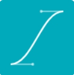
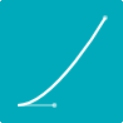

Обзор, цель и назначение урока
Свойство Transition. Создание переходов.
Трансформации - translate, rotate, scale, skew.
3D трансформации.
Анимация.
Фильтры.
Анимация
CSS3 FILES: animationПереходы
CSS3 FILES: transitionCSS Transitions
Трансформации
CSS3 FILES: transform
Добавьте несколько изображений на страницу. разместите рядом с каждым изображением спрятанный блок с
текстом описывающим изображение. Создайте стиль, который запустит анимацию и плавно отобразит описание при
наведении курсора на изображение.
Создайте страницу, на которой разместите несколько изображений повернутых под разным углом.
Разработате анимацию, которая будет поворачивать изображение по часовой или против часовой
стрелки при наведении курсора, так, чтобы для пользователя изображение становилось вертикально.
Создайте горизонтальное меню и разработайте анимированные выпадающие подменю.
Создайте на странице несколько ссылок. Разработайте анимацию, которая будет запускаться при наведении на
ссылку. Анимация должна плавно менять фон ссылки и немного увеличивать размер.
- С помощью CSS3 свойства Вы можете создавать эффект перехода из одного состояния в другое. Для создания переходов необходимо указать для какого CSS свойства будет применяться эффект перехода и скорость измнения этих переходов в секундах. Для того, чтобы добавить эффект перехода к нескольким свойствам просто перечислите их названия через запятую.
-
Плавность выполнения переходов контролируется с помощью функций смягчения. В CSS3 существуют несколько видов
таких функций:
(см.: W3C transition-time-function)lineareaseease-in-outease-inease-out- - линейные изменения без ускорения и замедления
- - быстрое начало и замедление в конце
- - ускорение в начале и замедление в конце
- - ускорение в начале но без замедления в конце
- - тоже самое что и ease но с более медленной анимацией в начале
-
- ручное определение значения переходов.
См.: cubic-bezier generator
- Для создания анимации в CSS3 используется свойство
-
Для задания анимации элемента используется CSS3 свойство .
Это свойство - сокращенная запись различных свойств анимации:
- - задает имя анимации
- - задает время проигрывания анимации
- - описывает метод расчета промежуточных значений свойств для анимации
- - задает задержку анимации
- - задает количество циклов анимации
- - задает направление анимации
- - определяет, проигрывается ли анимация или стоит на паузе.
- Выбрать наиболее подходящий вариант кривой для интерполяции можно с помощью свойства .
-
Мы можем использовать четыре свойства перехода:
- - определяет имя (имена) свойств CSS, к которым должны быть применены переходы.
- - определяет время, за которое должен произоти переход.
- - определяет, как вычислены примежуточные значения перехода.
- - определяет, когда переход запускается.
- Каждый ключевой кадр описывает, как анимированный элемент должен вести себя в данной временной точке анимации. Ключевые кадры принимают процентные значения, чтобы определить время: 0% - запуск анимации, в то время как 100% - окончание. Вы можете дополнительно добавить промежуточные кадры для анимации.
- Чтобы переместить объект, можно использовать . Параметр transform всего лишь переместит объект из одной точки в другую, но не создаст анимацию данного перемещения. Чтобы исправить это, нужно добавить параметр перемещения в классе.
- Чтобы переместить объект по диагонали, мы совместим параметры x и y. В зависимости от направления, значение x и y может быть как положительным, так и отрицательным.
- Вращение в CSS3 регулируется градусными координатами (от 0° до 360°). Чтобы повернуть объект, примените следующие параметры: ; где ndeg - градусы.
- Для того чтобы повернуть объект по часовой стрелке, применим положительное значение для .
- Используя параметр или параметр , мы можем либо увеличивать, либо уменьшать объект непосредственно в рамках HTML. Объект будет менять размер в зависимости от значения n/x,y, где ось Х - ширина, а Y - а высота.
- Для применения нескольких команд необходимо перечислить их через пробел.
-
- смазывает изображение:
- - объект (0 - результат работы фильтра, 1 - фильтр будет наложен на исходный образец);
- - направление смазывания объекта в градусах (0 - вверх и далее по часовой стрелке с шагом 45 градусов);
- - степень размытия.
- - делает заданный цвет прозрачным.
- - добавляет свечение вдоль внешних границ объекта, создавая эффект "возгорания" границ объекта.
- - удаляет цветовую гамму объекта и отображает его в серых тонах.
- - меняет оттенок, насыщение и яркость объекта на противоположные.
- - производит "синусоидальное" искажение объекта вдоль вертикальной оси.
- - отображает объект в черно-белом варианте, как на рентгеновском снимке.
-
Спецификация Filter Effection 1.0:
- Оттенок: hue-rotate;
- Сепия: sepia;
- Яркость: brightness;
- Фильтры можно комбинировать: -webkit-filter: brightness(60%) sepia(100%);
- Контраст: contrast;
- Насыщенность: saturate.